功能说明：商户根据商品特性，决定是否启用序列号功能；
操作路径：【系统设置】 – 【业务设置】
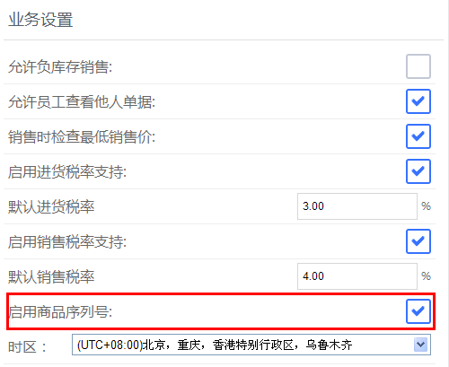
操作说明：
1.勾选“启用商品序列号支持”，来启用序列号[1]功能；
2. 帐户未开帐状态下，新增商品时可以直接添加序列号；如果帐户已开帐，则无法直接增加序列号，其操作与开账后增加库存类似；
[1]序列号：根据商品特性，将序列号与商品进行唯一绑定，根据序列号可以验证“产品的合法身份”，它是用来保障用户的正版权益，享受合法服务的；一套正版的产品只对应一组产品序列号，也叫机器码、认证码、注册申请码；
新增商品
功能说明：启用商品序列号支持后，新增商品页面增加了序列号设置选项，选项内容包括：停用、启用必填、启用选填；
操作路径：基础资料 – 新增商品
操作说明：
1.新增商品页面，填写相关信息后，点选序列号设置项；
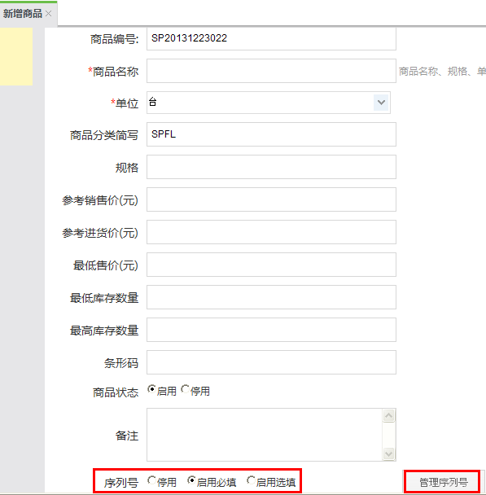
停用：虽然启用了序列号支持，但是针对该商品该支持不生效；
启用必填：商品与序列号强制关联；
启用选填：序列号是选填项，商品与序列号不强制关联；
2.点击启用选填或者必填之后出现如下序列号管理页面：
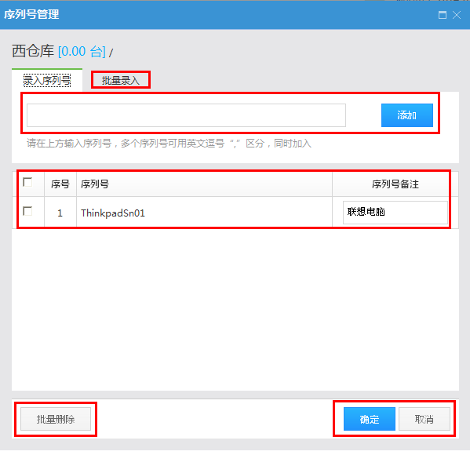
录入序列号：
i.手动录入一个序列号，按回车键或者点击添加按钮，则序列号添加到下方的序列号列表；
ii.根据提示，输入多个序列号，每个序列号之间用英文逗号区分，按回车键或者点击添加按钮，则所有序列号均添加到序列号列表；
iii.鼠标放置在录入序列号输入框中，使用激光条纹码扫描器等设备也可快速将序列号录入到序列号列表；
iiii.批量录入：点击进入批量录入页面；
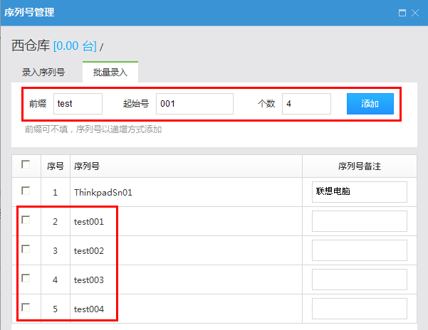
序列号备注：在每个序列号后面可以添加备注信息；
批量删除：选择多条或者全选所有记录，然后点击批量删除，则一次删除多条记录；
3.序列号选项后有个管理序列号按钮：
在点击启用必填或启用选填时，如果没有添加序列号，则可以点击管理序列号按钮打开序列号管理页面，序列号的管理操作请参照上述步骤第二步；
4.商品基本信息下有商品的期初库存信息，页面如下：
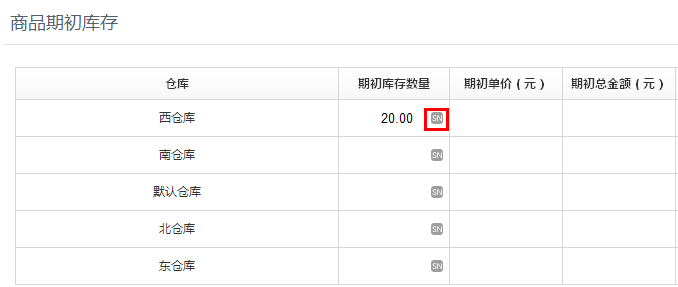
点击如图所示的SN标志，也可以打开序列号管理页面，序列号的管理操作请参照第二步；
5.序列号录入后，点击确定，则序列号与库存数量关联，一个序列号对应一个商品库存，最终保存商品，则序列号保存到系统中；
注：编辑商品，进入商品编辑页面，在该页面点击管理序列号按钮或者商品期初库存的SN标志，也可以对序列号进行管理，操作方式同新增商品时的操作；
6. 商品新增完毕之后，添加的序列号可以在慧管货 – 序列号查询页面查询到，序列号的状态为：入库，并且显示入库日期；
新增进货
功能说明：新增启用了序列号必填或者选填的商品；
操作路径：慧管货 – 新增进货
操作说明：前提：账户已开账
（一）新增进货：
1.新增进货页面，选择供应商、入库仓库；
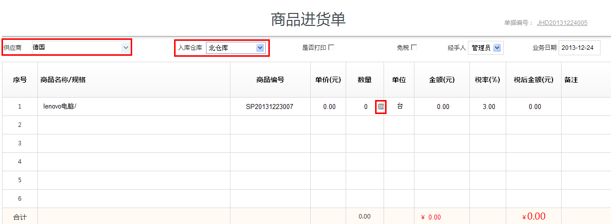
2.点击选择商品，如果该商品启用了必填、选填，则默认打开序列号管理页面，序列号的管理操作参照上述序列号管理操作。因为序列号与商品是一一对应关系，所以所添加的序列号数量即本次进货的商品数量；
i.序列号必填：添加完序列号之后，商品数量是无法编辑的；
ii.序列号选填：添加完商品序列号之后，商品数量可以编辑，但是编辑后的商品数量不能小于所所添加的商品序列号数量，例如：添加了20个序列号之后，将商品数量编辑为19；编辑后的商品数量需要大于或等于添加的商品序列号数量；
注：编辑商品数量之后，再添加序列号，序列号的数量时包含在商品总数之中的；
iii.SN按钮：序列号添加完毕后，可以在进货单页面的【数量】列下，点击SN按钮，打开序列号管理页面，对序列号进行管理操作；
3.添加完序列号后保存，完成新增进货操作；
4.新增进货单之后，可以在慧管货 – 序列号查询页面，查询到添加的商品序列号，序列号的状态为：在库，并且显示入库时间；
（二）复制新增进货单：
1.进货历史页面一览表中，选择需要复制的进货单，点击操作栏中的复制新增图标，打开复制新增进货单页面；
2. 复制新增页面，可以重新选择商品，也可以在原有商品上对数量和序列号进行修改，修改操作请参照上述序列号管理操作；
3. 保存单据之前请仔细检查需要修改的相关数值，然后再保存；
4. 复制新增进货单保存之后，效果同新增进货单一样，并且在序列号查询页面可以查询到相应的序列号信息，；
（三）序列号查询
1. 新增进货完成之后，在序列号查询页面，能够查询到刚刚添加的商品序列号；
（四）进货历史：
1.进货历史页面，查看进货单明细，鼠标悬停在SN图标上时可以查看添加的序列号明细；
（五）作废进货单
1.在进货历史页面，选择进货单，在操作列中点击 作废图标，将单据作废；
作废图标，将单据作废；
2.作废后的单据，其中所包含的序列号，在序列号查询页面中将无法查询到；
新增进货退货
功能说明：新增退货中包含启用了序列号必填或者选填的商品；
操作路径：慧管货 – 新增进货退货
操作说明：前提：账户已开账
（一）新增进货退货
1. 点击进入慧管货 – 新增进货退货页面，选择关联的进货单，打开进货退货单页面；
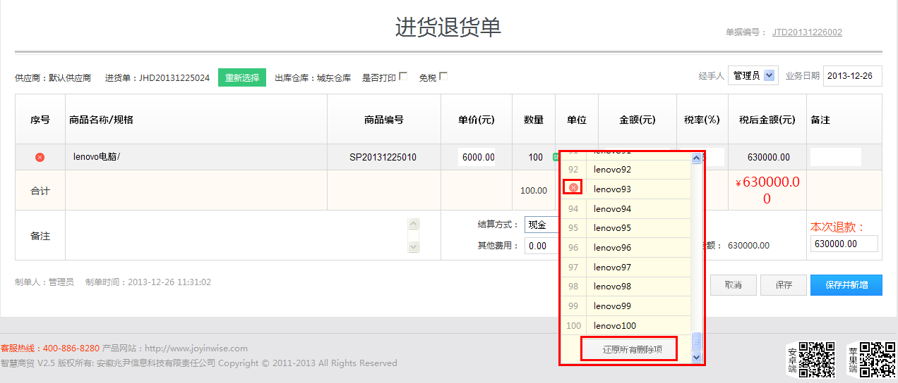
2. 执行退货：
i.序列号必填：启用了序列号必填的商品，如果不是全部退货，将鼠标悬停在SN图标上，界面会弹出如上图所示的序列号页面，在要删除的序列号前面点击按钮删除序列号，删除后剩下的序列号则是本次需要退货的商品序列号；
ii.删除序列号时如果出现错误，还可以在序列号列表的最下方，点击按钮，来还原所有删除的序列号；
iii.序列号选填：启用了序列号选填的商品，如果不是全部退货，可以直接编辑数量，也可以将鼠标悬停在SN图标上，在弹出的界面中对序列号进行删除，删除后剩下的序列号则是本次需要退货的商品序列号；
（二）序列号查询
1.新增进货退货单完成后，在退货单据中的序列号将不会显示在序列号查询结果中；
（三）进货退货历史
1.进货退货历史页面，查看进货退货单明细，鼠标悬停在SN图标上时可以查看序列号明细；
（四）作废进货退货单
1.在进货退货历史页面，选择进货退货单，在操作列中点击 作废图标，将单据作废；
作废图标，将单据作废；
2.作废后的单据，其中所包含的序列号，在序列号查询页面中将可以再次查询到；
新增销售
功能说明：新增销售启用了序列号必填或者选填的商品；
操作路径：慧管货 – 新增销售
操作说明：前提：账户已开账
（一）新增销售：
- 新增销售页面，选择默认客户、出库仓库，然后选择商品，弹出如下图所示的序列号管理页面；
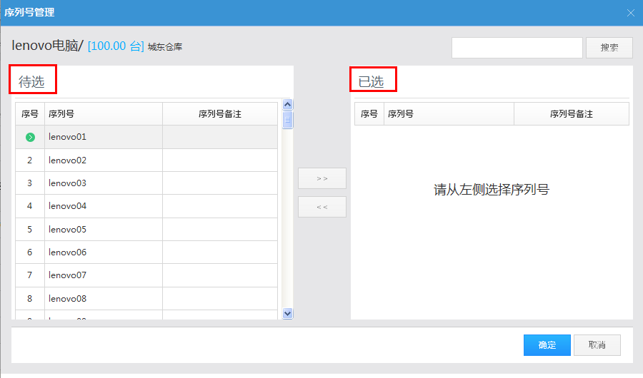
2.序列号管理：在如图所示页面，左侧为待选序列号区域，右侧为已选序列号区域:
i.添加待销售商品：可以从待选区域逐条选择要销售的序列号产品，也可以点击全选按钮，将待选区域的所有序列号一次全部添加到右侧；
ii.删除待销售商品：从已选区域逐条选择要删除的序列号产品，也可以点击全选按钮，将已选区域的所有序列号一次全部清除；
3.选择完待销售的序列号之后，点击添加，商品选择完毕：
i.序列号必填：该模式下，选择完带销售的序列号之后，本次销售的商品数量等于所选择的序列号数量，商品数量不可编辑；
ii.序列号选填：该模式下可以编辑商品数量，也可以选择商品序列号，如果编辑商品数量，则序列号数量最终包含在商品数量中；
4.完成销售单之后，在慧管货 – 序列号查询页面，可以查询到包含在销售单中的序列号，其状态为：已出库，并且显示出库日期；
（二）复制新增销售单：
1. 销售历史页面一览表中，选择需要复制的销售单，点击操作栏中的复制新增图标，打开复制新增销售单页面；
2. 复制新增页面，可以重新选择商品，也可以在原有商品上对数量和序列号进行修改；
3. 保存单据之前请仔细检查需要修改的相关数值，然后再保存；
4. 复制新增销售单保存之后，效果与新增销售单一致，该功能主要为方便用户添加类信息的销售单，同时对应的序列号在序列号查询页面为：已出库；
（三）序列号查询
1.新增销售完成之后，在序列号查询页面，能够查询到相应商品序列号的状态已经变为：已出库；
（四）销售历史：
1.销售历史页面，查看销售单明细，鼠标悬停在SN图标上时可以查看添加的序列号明细；
（五）作废销售单
1.在销售历史页面，选择销售单，在操作列中点击 作废图标，将单据作废；
作废图标，将单据作废；
2.作废后的单据，其中所包含的序列号，在序列号查询页面中状态将由已出库重新变为在库；
新增销售退货
功能说明：新增销售退货启用了序列号必填或者选填的商品；
操作路径：慧管货 – 新增销售退货
操作说明：前提：账户已开账
（一）新增销售退货
1. 点击进入慧管货 – 新增销售退货页面，选择关联的销售单，打开销售退货单页面；
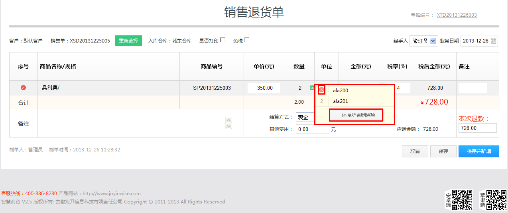
2. 执行退货：
i.序列号必填：启用了序列号必填的商品，如果不是全部退货，将鼠标悬停在SN图标上，界面会弹出如上图所示的序列号页面，在要删除的序列号前面点击 按钮删除序列号，删除后剩下的序列号则是本次需要退货的商品序列号；
按钮删除序列号，删除后剩下的序列号则是本次需要退货的商品序列号；
ii.删除序列号时如果出现错误，还可以在序列号列表的最下方，点击按钮，来还原所有删除的序列号；
iii.序列号选填：启用了序列号选填的商品，如果不是全部退货，可以直接编辑数量，也可以将鼠标悬停在SN图标上，在弹出的界面中对序列号进行删除，删除后剩下的序列号则是本次需要退货的商品序列号；
（二）序列号查询
1.新增销售退货单完成后，在退货单据中的序列号，在序列号查询结果中单据状态将由销售后的已出库变为在库；
（三）销售退货历史
1.销售退货历史页面，查看销售退货单明细，鼠标悬停在SN图标上时可以查看序列号明细；
（四）作废销售退货单
1.在销售退货历史页面，选择销售退货单，在操作列中点击 作废图标，将单据作废；
作废图标，将单据作废；
2.作废后的单据，其中所包含的序列号，在序列号查询页面中单据状态为：已出库；
库存盘点
功能说明：盘点启用了序列号必填或者选填的商品；
操作路径：慧管货 – 库存盘点
操作说明：前提：账户已开账，账户锁定
（一）新增盘点单
1. 选择盘点仓库，新增盘点单，点击批量添加商品，添加需要盘点的启用了序列号必填或者选填的商品；
2. 选择商品后可以查看商品的库存信息，点击SN图标按钮，可以查看商品包含的序列号信息；
3. 确认所选择的的商品信息之后，可以保存稍后盘点，也可以直接盘点；
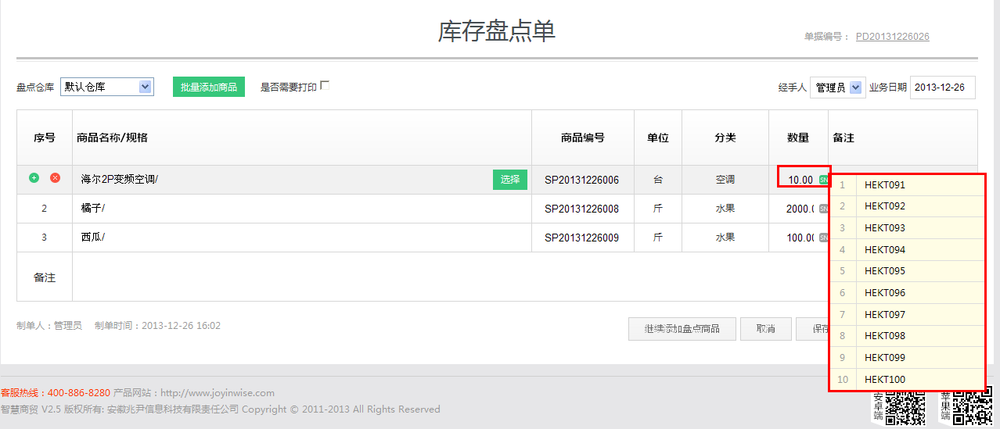
（二）盘点
1. 保存盘点单时直接点击【现在开始盘点】或者在慧管货 – 历史盘点单页面选择单据点击开始盘点按钮，打开如下盘点界面：
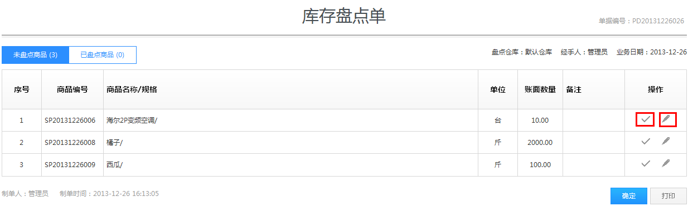
2. 盘点操作：如果确认账面库存与实际库存数量一致，则可以直接点击【数量正确】按钮，对商品进行盘点确认，如果账面库存与实际库存不一致，则点击编辑实际库存：
- 序列号必填：商品启用序列号必填时，点击编辑实际库存按钮则直接弹出如下图所示的盘点序列号页面，页面分为账面库存序列号区域、实际库存序列号区域、图释区域、清空序列号按钮及开始配对按钮；
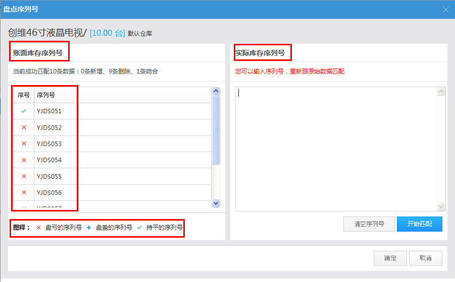
i.账面库存：显示该商品账面库存所包含的所有序列号；
ii.实际库存：将实际库存的序列号输入到该区域，随后进行的【开始匹配】操作将使用该处数据；
iii.图释：匹配之后，序列号有三种状态，表示盘亏的序列号，表示盘盈的序列号，表示持平的序列号；
iiii.清空序列号：清空实际库存中输入的序列号；
iiiii.开始匹配：实际库存中输入实际的序列号之后，点击开始匹配按钮，系统会对账面库存与实际库存中的序列号进行比对，比对后的三种状态可参照图释解释，匹配结束之后在账面库存区域显示匹配结果，如下图所示：
iiiiii.序列号选填：商品启用序列号选填时，点击【编辑实际库存】按钮，可以编辑实际库存数量，然后弹出盘点序列号页面，盘点页面序列号页面的操作参照上述序列号必填；
3. 在已盘点商品页面，可以看到已经盘点过的商品，如果实际库存与账面库存仍然有问题，则可以点击图标，重新编辑实际库存，序列号的盘点操作同上；
（三）调库
对所有商品盘点完成之后，系统系统会提示调整库存，确认之后则将盘点后的库存数量更新到库存中；
实际库存与账面库存一致的，库存数量不变，对于包含序列号的商品则存在如下情况：
i.序列号必填：对于盘盈的商品，则在库存增加的同时，新增的序列号将会在序列号查询页面查询到，对于盘亏的商品，则在序列号查询页面，该序列号的状态变为：已出库；
ii.序列号选填： 商品如果没有增加序列号，则只将库存更新，如果增加了序列号则：对于盘盈的商品则在库存增加的同时，新增的序列号将会在序列号查询页面查询到，对于盘亏的商品，则在序列号查询页面，该序列号的状态变为：已出库；
历史盘点单
功能说明：查看添加的历史盘点单，在单据中可以查看详细，也可以针对单据执行盘点、调库操作；
操作路径：慧管货 – 历史盘点单
操作说明：前提：账户已开账
（一）查看单据
1. 历史盘点单页面，包含四种状态单据状态，包括：尚未完成盘点、尚未完成盘点、已调库、库存和账面数量一致；
2. 对所有单据可以执行查看详细、作废等操作，对于没有执行调库的可以执行调库操作；
3. 查看单据详细时，可以对没有完成的盘点继续进行盘点操作，包含序列号必填和选填的商品，其操作可参照库存盘点章节的操作；
（二）单据作废
1. 作废尚未调库的盘点单，单据状态改变，库存等信息不变；包含序列号必填和选填的商品不受影响；
2. 作废已经调库的盘点单，当盘点单包含序列号必填和选填的商品时，则：
盘盈：作废盘盈的单据后，商品库存将会减去增加的商品数量；在序列号查询页面，盘盈时新增的序列号将无法被查询到；
盘亏：作废盘亏的单据后，商品库存将会增加减去的商品数量，在序列号查询页面，盘亏的序列号，其状态将由已出库变为在库；
新增组装拆卸
功能说明：根据销售需求，将商品进行组装、拆卸销售；
操作路径：慧管货 – 新增组装拆卸
操作说明：前提：账户已开账
（一）新增组装产品
新增组装产品的操作可以参见慧管货 – 库存 – 新增组装拆卸章节，本处描述针对包含序列号必填和选填的商品的操作；
1. 在原商品清单中选择出库仓库，然后选择组合或者拆卸的商品，如果选择的商品包含序列号必填或选填商品，则系统自动打开如下所示的序列号管理页面；
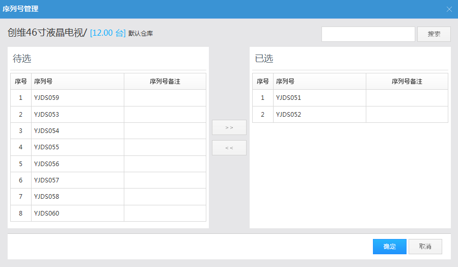
在序列号管理页面，选择参与组合或者拆卸的商品序列号，确认后商品添加到清单中，如果商品序列号必填，则数量无法编辑，如果序列号选填，则数量可以编辑；
2. 在新商品清单中选择入库仓库，然后选择组装或拆卸后即将入库的产品名称，如果该产品启用序列号必填或者选填功能，则默认打开如下所示的序列号入库管理界面：
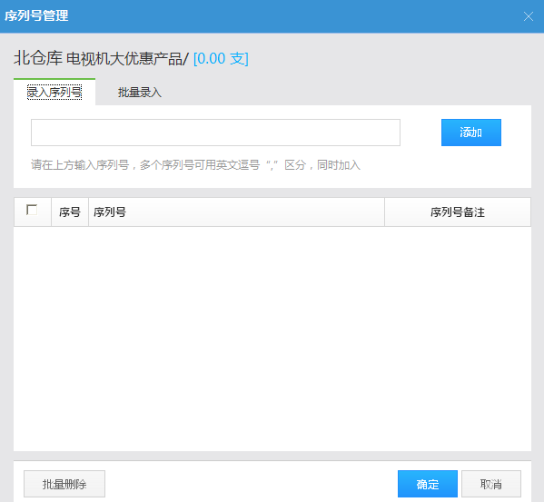
添加入库的商品序列号，如果商品序列号必填，则数量无法编辑，如果序列号选填，则数量可以再次编辑，确定并保存，组装拆卸单新增完成；
3. 组装拆卸单完成后，库存商品序列号信息发生如下变化：
原商品清单
库存：清单中的商品，在对应仓库中库存减少；
序列号：清单中的序列号，在序列号查询页面，序列号状态变为：已出库；
新商品清单
库存：清单中的商品，在对应仓库中库存增加；
序列号：清单中的序列号，在序列号查询页面可以查询到，序列号状态为：已出库；
组装拆卸历史
功能说明：查看添加的组装拆卸单，以及单据明细；
操作路径：慧管货 – 组装拆卸历史
操作说明：前提：账户已开账
（一）查看单据明细
1. 点击进入慧管货 – 组装拆卸历史页面，选择需要查看的单据，点击查看详细按钮，进入单据详细页面；
2. 包含序列号选填或者必填的商品，可以在【数量】列中看到SN图标，鼠标悬停在SN图标上，可以查看该商品序列号；
（二）复制及新增
1. 在组装拆卸历史页面中，选择需要复制新增的单据，点击复制及新增按钮，打开复制新增组装拆卸单页面，如果复制的单据包含有序列号必填或选填商品，则在该页面，原商品清单，需要重新选择出库序列号，新商品清单需要重新添加入库序列号；
2. 修改完相关数据之后，保存，保存后的库存及序列号变化情况可参见新增组装拆卸章节；
（三）作废单据
1. 在组装拆卸历史页面中，选择需要作废的单据，点击作废按钮，则该单据作废；作废后，商品库存及序列号发生如下变化：
原商品清单
库存：清单中的商品，在对应仓库中库存恢复（作废之前库存减少）；
序列号：清单中的序列号，在序列号查询页面，序列号状态重新变为：出库；
新商品清单
库存：清单中的商品，在对应仓库中库存恢复（作废之前库存增加）；
序列号：清单中的序列号，在序列号查询页面消失；
新增调拨单
功能说明：将包含序列号必填或选填的商品调拨仓库；
操作路径：慧管货 – 新增调拨单
操作说明：前提：账户已开账
1. 进入慧管货 – 新增调拨单页面，选择出库仓库和入库仓库；
2. 选择需要调拨的商品，如果包含序列号必填或选填商品，则系统默认打开如下所示的序列号管理页面，选择需要调拨的序列号，确定；对于序列号选填的商品，序列号选择之后可以继续编辑调拨商品的数量；
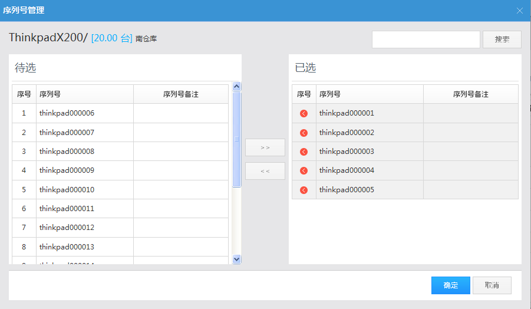
3. 保存调拨单后，完成商品调拨仓库操作，商品库存和序列号发生如下变化：
库存：调拨清单中的商品，出库仓库库存减少，入库仓库库存增加；
序列号：调拨单中的序列号，在序列号查询页面不发生变化，状态仍然为：在库；
历史调拨单
功能说明：查看添加的历史调拨单，在单据中可以查看详细，也可以针对单据执行复制新增、作废操作；
操作路径：慧管货 – 历史调拨单
操作说明：前提：账户已开账
（一）查看单据
1. 点击进入 慧管货 – 历史调拨单页面，选择需要查看的单据，点击查看详细按钮，进入单据详细页面；
2. 包含序列号选填或者必填的商品，可以在【数量】列中看到SN图标，鼠标悬停在SN图标上，可以查看该商品序列号；
（二）复制及新增
1. 在历史调拨单页面中，选择需要复制新增的单据，点击复制及新增按钮，打开复制新增调拨单页面，如果复制的单据包含序列号必填商品，则需要重新选择需要调拨的商品序列号，如果为序列号选填商品，则可以在选择序列号之后另外再编辑商品数量（商品数量的编辑不受序列号选择的先后顺序影响）；
2. 修改完相关数据之后，保存，保存后的库存及序列号变化情况可参见新增调拨单章节；
（三）作废单据
1. 在历史调拨单页面中，选择需要作废的单据，点击 作废按钮，则该单据作废；作废后，商品库存数量恢复，序列号状态不发生变化：
作废按钮，则该单据作废；作废后，商品库存数量恢复，序列号状态不发生变化：
库存：调拨清单中的商品，出库仓库库存恢复（作废前库存减少），入库仓库库存恢复（作废前库存增加）；
借入单
功能说明：系统提供从其他商户或供应商借入商品，并且对借入的商品进行跟踪记录，可以进行归还、转进货等；
操作路径：慧管货 – 借入单
操作说明：前提：账户已开账
（一）新增借入单
1. 选择需要借入的商品（该商品可以临时添加），如果包含序列号必填或选填功能，则选择商品后系统自动打开如下序列号管理界面；
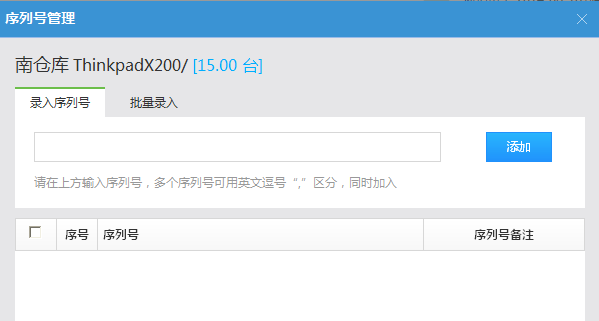
2. 在序列号管理页面，选择需要借入的商品序列号，如果借入的是序列号选填商品，则序列号输入之后可以另外编辑商品数量，然后点击保存，完成商品借入；
3. 借入单新增完毕后，库存与序列号发生如下变化：
库存：借入单中的商品，如果仓库中有该商品，则库存在原有数量上增加；如果仓库中没有该商品，则在仓库中新增该商品，库存数量为借入的商品数量；
序列号：在序列号查询页面，可以查询到借入单中录入的商品序列号，状态为：在库；
（二）归还借入商品
1.点击进入慧管货 – 借入单页面，选择需要归还的单据，点击按钮，打开如下图所示的商品归还单页面；
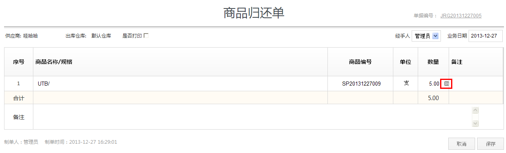
2. 查看单据，如果归还的是序列号必填商品，则数量无法编辑，如果是序列号选填商品，则可以编辑归还数量，但是归还的数量应该是小于等于借入数量的；
点击【数量】列中的SN图标，打开序列号管理页面，可以查看归还的商品所包含的序列号，该部分序列号默认会在下图所示的已选区域；
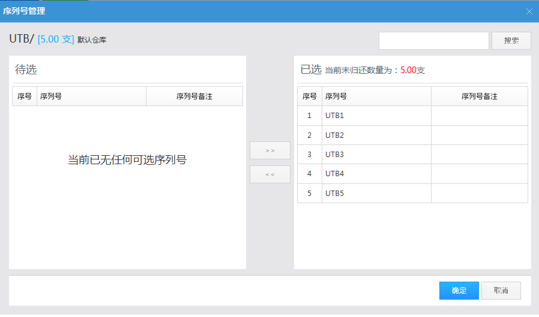
3. 对借入单确认归还之后，借入单一览表中，该单据的状态由未归还变为已归还；此时该单据中的商品，对应入库仓库中的库存减少（未归还时，库存增加），序列号查询页面的序列号状态由在库变为已出库；
（三）借入转进货
1. 点击进入慧管货 – 借入单页面，选择需要借入转进货的单据，点击按钮，打开如下图所示的借入转进货页面；
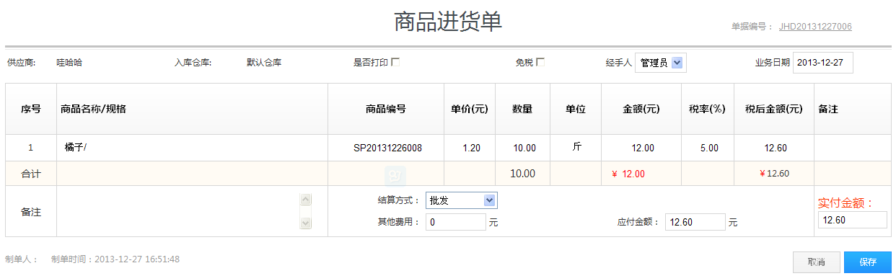
2. 点击保存，则借入单自动保存到进货历史中，借入单一览表中该条记录的状态变为已归还；库存和序列号信息保持不变（新增借入单时，库存和序列号已经更新过了）；
（四）作废单据
在借入单一览表页面，有两种状态单据可以作废；
1. 未归还借入单作废
借入单一览表，选择未归还的借入单，在操作列中点击图标，将单据作废；
作废后的单据，对应入库仓库中商品库存减少（作废之前库存增加），序列号查询页面，不能查询到入库时添加的序列号；
2. 已归还借入单作废
借入单一览表，选择已归还的借入单，在操作列中点击图标，将单据作废；
作废后的单据，因为借入单已经归还，所以商品库存不发生变化，但是在序列号查询页面，作废单据中包含的序列号将无法再被查询到；
借出单
功能说明：系统支持其他商户从当前用户借出商品，并且对借出的商品进行跟踪记录，可以进行归还、转销售等操作；
操作路径：慧管货 – 借出单
操作说明：前提：账户已开账
（一）新增借出单
1. 选择需要借出的商品（该商品可以临时添加），如果包含序列号必填或选填功能，则选择商品后系统自动打开如下序列号管理界面；
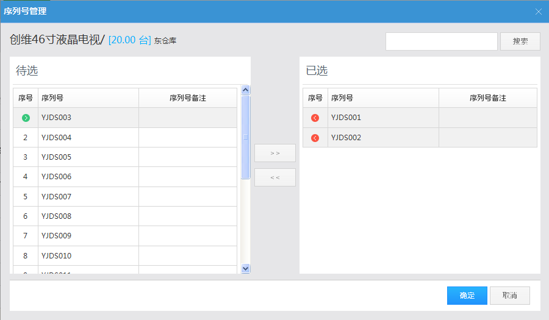
2. 在序列号管理页面，选择需要借出的商品序列号，如果借出的是序列号选填商品，则序列号输入之后可以另外编辑商品数量，然后点击保存，完成商品借出；
3. 借出单新增完毕后，库存与序列号发生如下变化：
库存：借出单中的商品，相应仓库中库存在原有数量上减少；
序列号：在序列号查询页面，可以查询到借出单中添加的商品序列号，状态为：已出库；
（二）借出商品被归还
1.点击进入慧管货 – 借出单页面，选择被归还的商品单据，点击 按钮，打开如下图所示的商品归还单页面；
按钮，打开如下图所示的商品归还单页面；
2. 查看单据，如果归还的是序列号必填商品，则数量无法编辑，如果是序列号选填商品，则可以编辑归还数量，但是归还的数量应该是小于等于借出数量的；
点击【数量】列中的SN图标，打开序列号管理页面，可以查看归还的商品所包含的序列号；因为商品的一些特殊性，归还的商品其序列号有可能与原来序列号不一致，因此，系统序列号界面还提供了重新录入序列号的功能，但是序列号总数不能超过未归还的商品数量；
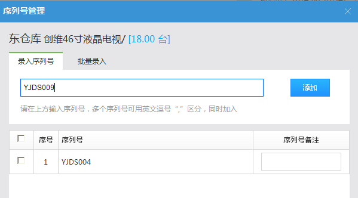
3. 对借出单确认归还之后，借出单一览表中，该单据的状态由未归还变为已归还；库存及序列号发生如下变化：
库存：该单据中的商品，对应入库仓库中的库存增加（未归还时，库存减少）；
序列号：如果归还的商品序列号与原序列号一致，则序列号查询页面的序列号状态由已出库变为在库；如果归还的商品序列号是重新录入的，则在系统中增加该序列号，序列号查询页面能够查询到该序列号，状态为在库；
（三）借出转销售
1. 点击进入慧管货 – 借出单页面，选择需要借出转销售的单据，点击按钮，打开如下图所示的借出转销售页面；
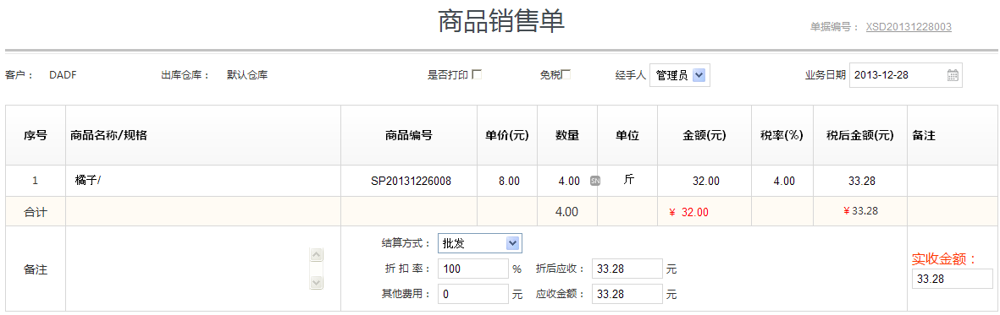
2. 点击保存，则借出单自动保存到销售历史中，借出单一览表中该条记录的状态变为已归还；库存和序列号信息保持不变（新增借出单时，库存和序列号已经更新过了）；
（四）作废单据
在借出单一览表页面，有两种状态单据可以作废；
1. 未归还借出单作废
借出单一览表，选择尚未归还的借出单，在操作列中点击 图标，将单据作废；
图标，将单据作废；
作废后的单据，对应入库仓库中商品库存增加（作废之前库存减少），序列号查询页面，包含在单据中的序列号状态由已出库变为在库；
2. 已归还借出单作废
借入单一览表，选择已归还的借入单，在操作列中点击 图标，将单据作废；
图标，将单据作废；
作废后的单据，因为借出单中商品已经归还，所以其库存不发生变化，但是在序列号查询页面，作废单据中包含的序列号将无法再被查询到；